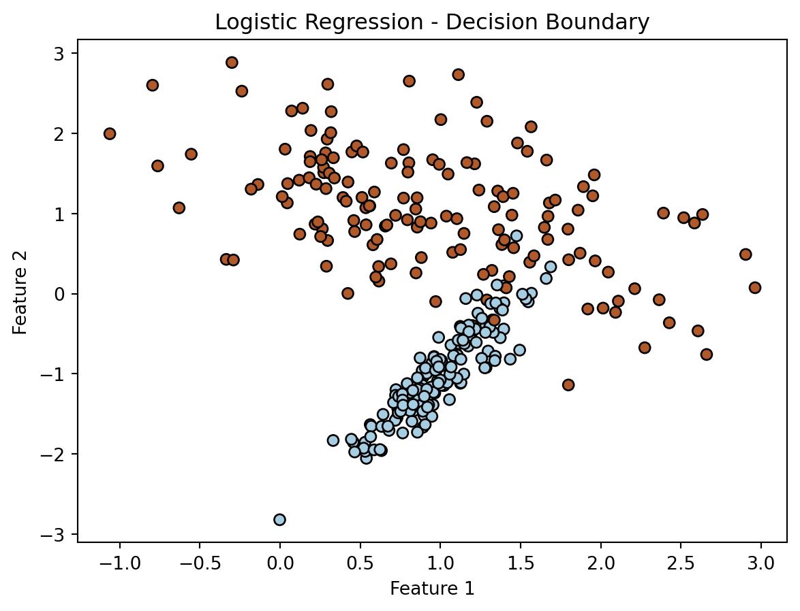
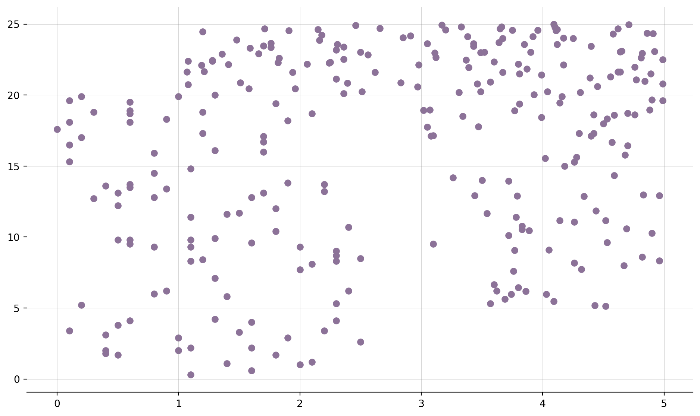
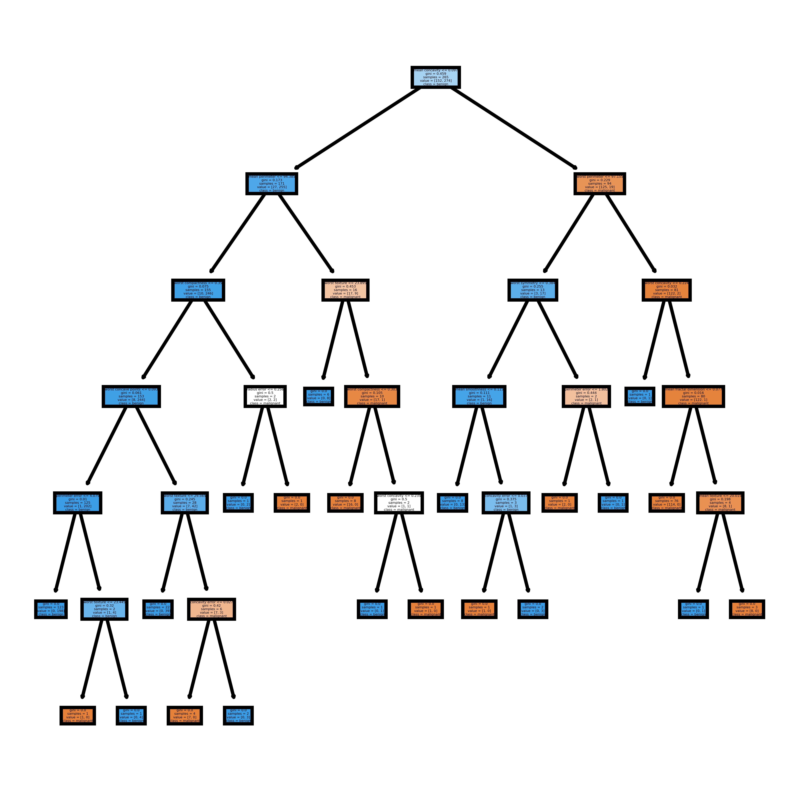
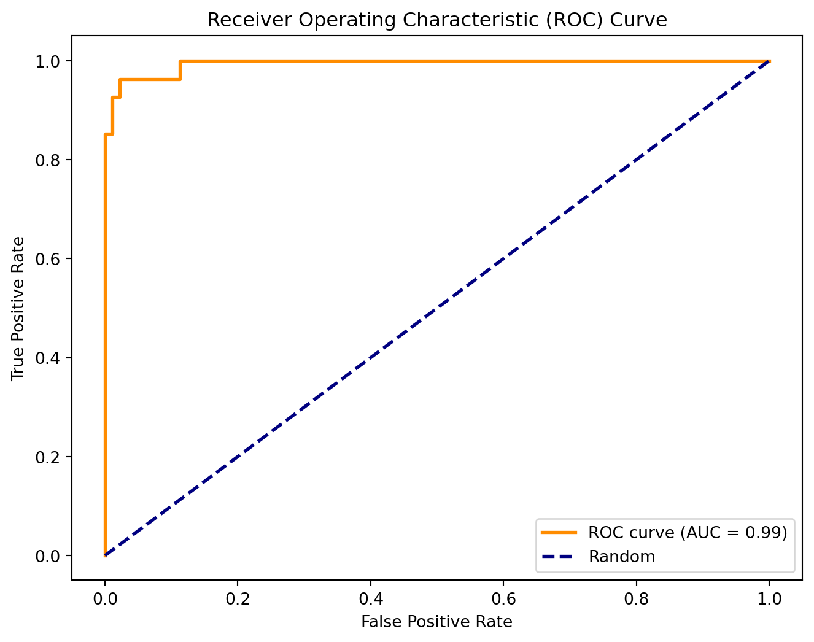
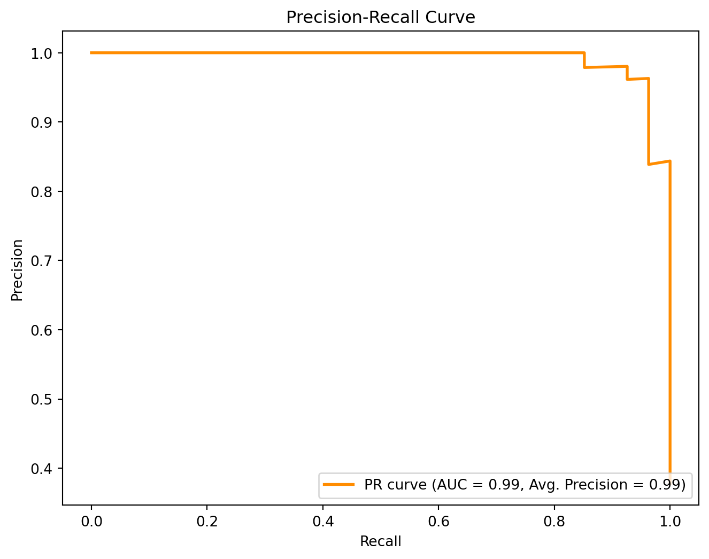
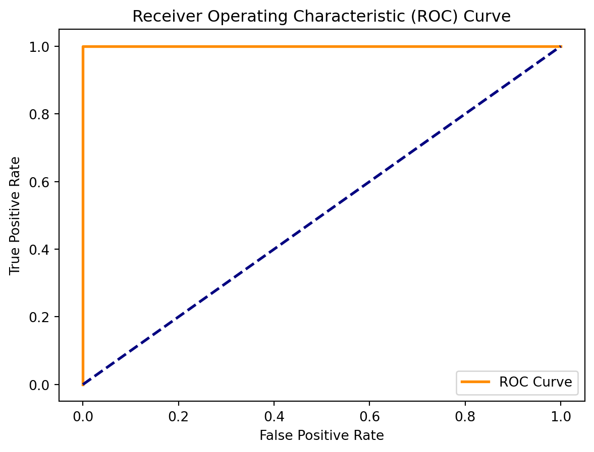
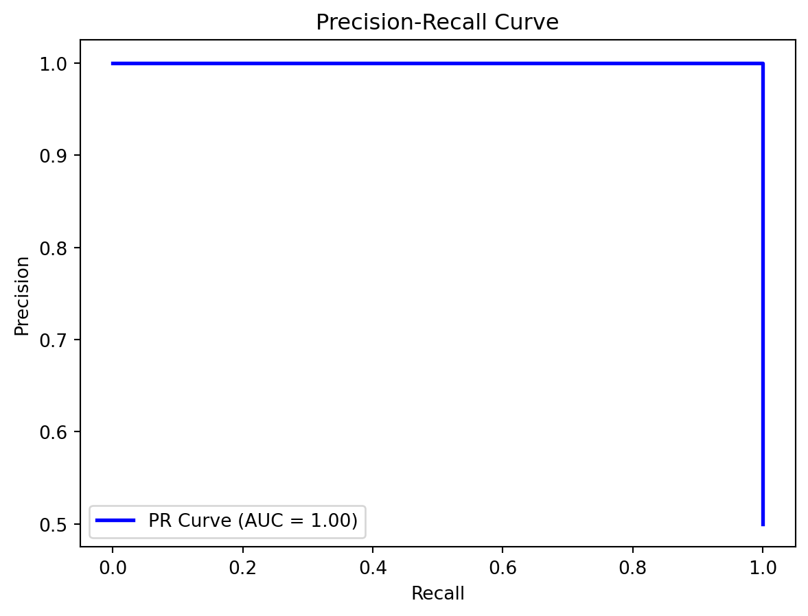
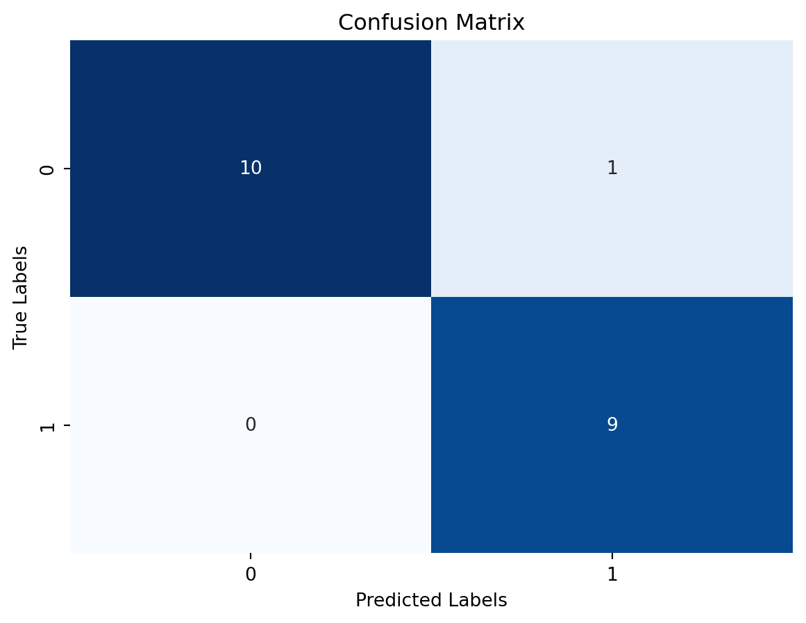

Introduction: Classification, a fundamental task in machine learning, involves assigning predefined labels to instances based on their features. In this exploration, we delve into the intricacies of classification algorithms, showcasing their applications through Python examples. The journey will unravel the methodologies behind several classification techniques and demonstrate how to leverage them for insightful predictions.
Binary Classification: Discriminating Between Two Classes
Logistic Regression:
Logistic regression is a type of statistical method used in machine learning for binary classification problems.
It’s a go-to algorithm when the outcome we want to predict falls into one of two categories, like whether an email is spam or not.
Unlike linear regression, which predicts continuous values, logistic regression predicts the probability that an instance belongs to a particular category.
The predicted probability is then transformed using a logistic function, squashing it between 0 and 1.
The outcome is classified based on a chosen threshold: if the probability is above the threshold, it’s one class; otherwise, it’s the other.
Key Features:
Probabilistic Prediction: Logistic regression predicts the likelihood (probability) of an instance belonging to a specific class.
Sigmoid Function: The logistic or sigmoid function is used to convert raw predictions into probabilities, ensuring they’re within the 0 to 1 range.
Binary Outcome: Ideal for scenarios where the outcome is binary, like yes/no, spam/not spam, etc.
Simple and Interpretable: Logistic regression is relatively simple, easy to understand, and provides interpretable results.
Applications:
Spam Detection: Identifying whether an email is spam or not.
Medical Diagnosis: Predicting if a patient has a particular medical condition based on test results.
Credit Scoring: Assessing the likelihood of a customer defaulting on a loan.
Customer Churn: Predicting whether a customer is likely to leave a service or not.
Logistic Regression is a go-to algorithm for binary classification tasks.
Code
import numpy as npimport matplotlib.pyplot as pltfrom sklearn.datasets import make_classificationfrom sklearn.linear_model import LogisticRegressionfrom sklearn.model_selection import train_test_splitfrom sklearn.metrics import accuracy_score, confusion_matrix# Generate synthetic data for binary classificationX, y = make_classification(n_samples=300, n_features=2, n_informative=2, n_redundant=0, n_clusters_per_class=1, random_state=42)# Split data into training and testing setsX_train, X_test, y_train, y_test = train_test_split(X, y, test_size=0.25, random_state=42)# Fit a logistic regression modelmodel_logistic = LogisticRegression()model_logistic.fit(X_train, y_train)# Predictions and evaluationy_pred_logistic = model_logistic.predict(X_test)accuracy_logistic = accuracy_score(y_test, y_pred_logistic)# Visualize decision boundary for logistic regressionplt.scatter(X[:, 0], X[:, 1], c=y, cmap=plt.cm.Paired, edgecolors='k')plt.title('Logistic Regression - Decision Boundary')plt.xlabel('Feature 1')plt.ylabel('Feature 2')plt.show()# Display confusion matrix for logistic regressionconf_matrix_logistic = confusion_matrix(y_test, y_pred_logistic)print("Logistic Regression Example:")print("Confusion Matrix:\n", conf_matrix_logistic)print(f"Accuracy: {accuracy_logistic:.2%}")print("Explanation: Logistic Regression applied to binary classification with a visual representation of the decision boundary.")

Logistic Regression Example:
Confusion Matrix:
[[34 2]
[ 1 38]]
Accuracy: 96.00%
Explanation: Logistic Regression applied to binary classification with a visual representation of the decision boundary.
Support Vector Machines (SVM):
SVM is a versatile and powerful machine learning algorithm used for both classification and regression tasks.
Its primary goal is to find the optimal hyperplane that best separates different classes in the data.
SVM is especially effective in high-dimensional spaces and is robust even when the number of features exceeds the number of samples.
It’s a supervised learning algorithm, meaning it learns from labeled training data to make predictions on unseen data.
Key Features:
Maximizing Margin: SVM aims to find a hyperplane with the maximum margin, the distance between the hyperplane and the nearest data point from each class.
Support Vectors: The critical data points that determine the position of the optimal hyperplane are called support vectors.
Kernel Trick: SVM can handle non-linear relationships between features by using a kernel function to map the data into a higher-dimensional space.
Versatility: SVM can be used for binary and multiclass classification as well as regression tasks.
Applications:
Image Classification: SVM is used in image recognition tasks to classify objects in images.
Text Classification: It’s employed in natural language processing for tasks like spam detection and sentiment analysis.
Bioinformatics: SVM helps in classifying biological data, such as predicting protein functions.
Finance: SVM is used in predicting stock prices and credit scoring.
Support Vector Machines are valued for their ability to handle complex relationships in data and find robust decision boundaries, making them applicable to various real-world problems.
Support Vector Machines offer robust performance in binary classification scenarios.
Code
import randomimport numpy as npimport pandas as pdimport matplotlib.pyplot as pltdef generate_random_dataset(size):""" Generate a random dataset and that follows a quadratic distribution """ x = [] y = [] target = []for i inrange(size):# class zero x.append(np.round(random.uniform(0, 2.5), 1)) y.append(np.round(random.uniform(0, 20), 1)) target.append(0)# class one x.append(np.round(random.uniform(1, 5), 2)) y.append(np.round(random.uniform(20, 25), 2)) target.append(1) x.append(np.round(random.uniform(3, 5), 2)) y.append(np.round(random.uniform(5, 25), 2)) target.append(1) df_x = pd.DataFrame(data=x) df_y = pd.DataFrame(data=y) df_target = pd.DataFrame(data=target) data_frame = pd.concat([df_x, df_y], ignore_index=True, axis=1) data_frame = pd.concat([data_frame, df_target], ignore_index=True, axis=1) data_frame.columns = ['x', 'y', 'target']return data_frame# Generate datasetsize =100dataset = generate_random_dataset(size)features = dataset[['x', 'y']]label = dataset['target']# Hold out 20% of the dataset for trainingtest_size =int(np.round(size *0.2, 0))# Split dataset into training and testing setsx_train = features[:-test_size].valuesy_train = label[:-test_size].valuesx_test = features[-test_size:].valuesy_test = label[-test_size:].values# Plotting the training setfig, ax = plt.subplots(figsize=(12, 7))# removing to and right borderax.spines['top'].set_visible(False)ax.spines['left'].set_visible(False)ax.spines['right'].set_visible(False)# adding major gridlinesax.grid(color='grey', linestyle='-', linewidth=0.25, alpha=0.5)ax.scatter(features[:-test_size]['x'], features[:-test_size]['y'], color="#8C7298")plt.show()

Multiclass Classification: Navigating Diverse Class Labels
Random Forest:
Random Forest is a powerful ensemble learning algorithm used for both classification and regression tasks.
It operates by constructing multiple decision trees during training and outputs the mode of the classes (classification) or the mean prediction (regression) of the individual trees.
It’s an ensemble method, meaning it combines the predictions of multiple models to improve overall accuracy and robustness.
The “forest” in Random Forest is a collection of decision trees, and the “random” part comes from the introduction of randomness during both training and prediction phases.
Key Features:
Decision Trees: Random Forest is built on the foundation of decision trees, which are known for their simplicity and interpretability.
Bootstrap Aggregating (Bagging): Random Forest employs bagging, a technique that involves training each tree on a random subset of the data, allowing for diverse trees.
Feature Randomness: During the construction of each tree, a random subset of features is considered at each split, enhancing the model’s diversity.
Reducing Overfitting: The combination of diverse trees and feature randomness helps mitigate overfitting, making Random Forest robust to noisy data.
Applications:
Image Classification: Random Forest is used in image recognition tasks to classify objects in images.
Healthcare: It’s applied in predicting diseases based on patient data and medical images.
Finance: Random Forest is employed in credit scoring and fraud detection.
Ecology: In ecology, it helps analyze and predict biodiversity patterns.
Random Forest is valued for its ability to handle complex relationships in data, provide robust predictions, and mitigate overfitting, making it a widely used algorithm in various domains.
Random Forest is an ensemble method known for its versatility in handling multiclass classification.
Code
import matplotlib.pyplot as pltfrom sklearn.datasets import load_breast_cancerfrom sklearn import treeimport pandas as pdfrom sklearn.ensemble import RandomForestClassifierfrom sklearn.model_selection import train_test_split# Load the Breast Cancer Datasetdata = load_breast_cancer()df = pd.DataFrame(data.data, columns=data.feature_names)df['target'] = data.target# Arrange Data into Features Matrix and Target VectorX = df.loc[:, df.columns !='target']y = df.loc[:, 'target'].values# Split the data into training and testing setsX_train, X_test, Y_train, Y_test = train_test_split(X, y, random_state=0)# Random Forests in `scikit-learn` (with N = 100)rf = RandomForestClassifier(n_estimators=100, random_state=0)rf.fit(X_train, Y_train)fn=data.feature_namescn=data.target_namesfig, axes = plt.subplots(nrows =1,ncols =1,figsize = (4,4), dpi=800)tree.plot_tree(rf.estimators_[0], feature_names = fn, class_names=cn, filled =True);fig.savefig('rf_individualtree.png')

Evaluation Metrics and Beyond
Receiver Operating Characteristic (ROC) Curve:
ROC curves visualize the trade-off between true positive rate and false positive rate.
Code
import numpy as npimport matplotlib.pyplot as pltfrom sklearn.datasets import load_breast_cancerfrom sklearn.model_selection import train_test_splitfrom sklearn.svm import SVCfrom sklearn.metrics import roc_curve, auc# Load the Breast Cancer datasetcancer = load_breast_cancer()X = cancer.datay = cancer.target# Convert the problem to binary classification (class 0 vs class 1)y_binary = (y ==0).astype(int)# Split the data into training and testing setsX_train, X_test, y_train, y_test = train_test_split(X, y_binary, test_size=0.25, random_state=42)# Create a simple SVM model for binary classificationsvm_model = SVC(kernel='linear', probability=True)svm_model.fit(X_train, y_train)# Obtain class probabilities for positive class (class 0)y_probabilities = svm_model.predict_proba(X_test)[:, 1]# Compute ROC curve and AUCfpr, tpr, _ = roc_curve(y_test, y_probabilities)roc_auc = auc(fpr, tpr)# Plot the ROC curveplt.figure(figsize=(8, 6))plt.plot(fpr, tpr, color='darkorange', lw=2, label=f'ROC curve (AUC = {roc_auc:.2f})')plt.plot([0, 1], [0, 1], color='navy', lw=2, linestyle='--', label='Random')plt.xlabel('False Positive Rate')plt.ylabel('True Positive Rate')plt.title('Receiver Operating Characteristic (ROC) Curve')plt.legend(loc='lower right')plt.show()

This code uses the Breast Cancer dataset, and you can replace it with any binary classification dataset of your choice. The ROC curve is a useful tool for evaluating the performance of binary classification models.
Precision-Recall Curve:
Precision-Recall curves help evaluate models under different class distribution scenarios.
Code
import numpy as npimport matplotlib.pyplot as pltfrom sklearn.datasets import load_breast_cancerfrom sklearn.model_selection import train_test_splitfrom sklearn.svm import SVCfrom sklearn.metrics import precision_recall_curve, auc, average_precision_score# Load the Breast Cancer datasetcancer = load_breast_cancer()X = cancer.datay = cancer.target# Convert the problem to binary classification (class 0 vs class 1)y_binary = (y ==0).astype(int)# Split the data into training and testing setsX_train, X_test, y_train, y_test = train_test_split(X, y_binary, test_size=0.25, random_state=42)# Create a simple SVM model for binary classificationsvm_model = SVC(kernel='linear', probability=True)svm_model.fit(X_train, y_train)# Obtain class probabilities for positive class (class 0)y_probabilities = svm_model.predict_proba(X_test)[:, 1]# Compute Precision-Recall curve and AUCprecision, recall, _ = precision_recall_curve(y_test, y_probabilities)pr_auc = auc(recall, precision)average_precision = average_precision_score(y_test, y_probabilities)# Plot the Precision-Recall curveplt.figure(figsize=(8, 6))plt.plot(recall, precision, color='darkorange', lw=2, label=f'PR curve (AUC = {pr_auc:.2f}, Avg. Precision = {average_precision:.2f})')plt.xlabel('Recall')plt.ylabel('Precision')plt.title('Precision-Recall Curve')plt.legend(loc='lower right')plt.show()

This code demonstrates how to create a Precision-Recall curve for a binary classification problem using an SVM model. Replace the dataset with any binary classification dataset of your choice. The Precision-Recall curve provides valuable insights into the performance of a classifier, especially in imbalanced datasets.
Mathematical Explanation of Classification in Machine Learning:
Classification in machine learning is a type of supervised learning where the algorithm learns to categorize input data into predefined classes or labels. The goal is to train the model to make accurate predictions on new, unseen data based on patterns learned during training.
Binary Classification: In binary classification, there are two possible outcomes or classes, often denoted as positive (1) and negative (0). The algorithm learns a decision boundary to separate these classes in the feature space.
Here are the mathematical formulas for key binary classification metrics:
True Positive (TP):
TP=Number of instances correctly predicted as positive
True Negative (TN):
TN=Number of instances correctly predicted as negative
False Positive (FP):
FP=Number of instances incorrectly predicted as positive (Type I error)
False Negative (FN):
FN=Number of instances incorrectly predicted as negative (Type II error)
Accuracy:
Accuracy=TP+TN/(FP+FN+TP+TN)
Precision (Positive Predictive Value):
Precision=TP/(FP+TP)
Recall (Sensitivity, True Positive Rate):
Recall=TP/(FN+TP)
Specificity (True Negative Rate):
Specificity=TN/(FP+TN)
F1 Score:
F1Score=(2⋅Precision⋅Recall)/(Precision+Recall)
False Positive Rate (FPR):
FPR=FP/(TN+FP)
False Negative Rate (FNR):
FNR=FN/(TP+FN)
Area Under the ROC Curve (AUC-ROC):
AUC-ROC(Area Under the Receiver Operating Characteristic Curve)
These formulas provide a quantitative assessment of a binary classification model’s performance by considering different aspects such as accuracy, precision, recall, specificity, and the trade-off between precision and recall captured by the F1 score. The AUC-ROC measures the area under the curve that illustrates the model’s true positive rate against the false positive rate at various decision thresholds.
Multiclass Classification: For multiclass classification, there are more than two classes, and the model learns to distinguish between all possible classes. It involves assigning an input to one of several predefined categories.
Logistic Regression: Logistic Regression is a commonly used algorithm for binary classification. It models the probability of an instance belonging to a particular class using the logistic function. The decision boundary is determined by a set of weights and biases.
Support Vector Machines (SVM): SVM is another algorithm that finds the optimal hyperplane to separate classes. It works well for both binary and multiclass classification, aiming to maximize the margin between different classes.
Code
import numpy as npimport matplotlib.pyplot as pltfrom sklearn.model_selection import train_test_splitfrom sklearn.linear_model import LogisticRegressionfrom sklearn.metrics import roc_curve, auc, precision_recall_curve, confusion_matrix# Create example dataX = np.random.rand(100, 2)y = (X[:, 0] + X[:, 1] >1).astype(int)# Split the data into training and testing setsX_train, X_test, y_train, y_test = train_test_split(X, y, test_size=0.2, random_state=42)# Train a logistic regression modelmodel = LogisticRegression()model.fit(X_train, y_train)# Predict probabilities and classesy_probs = model.predict_proba(X_test)[:, 1]y_pred = model.predict(X_test)# ROC Curve and AUCfpr, tpr, _ = roc_curve(y_test, y_probs)roc_auc = auc(fpr, tpr)# Precision-Recall Curveprecision, recall, _ = precision_recall_curve(y_test, y_probs)# Confusion Matrixconf_matrix = confusion_matrix(y_test, y_pred)# Print or visualize metrics as neededprint(f"Area under ROC Curve (AUC): {roc_auc}")plt.plot(fpr, tpr, color='darkorange', lw=2, label='ROC Curve')plt.plot([0, 1], [0, 1], color='navy', lw=2, linestyle='--')plt.xlabel('False Positive Rate')plt.ylabel('True Positive Rate')plt.title('Receiver Operating Characteristic (ROC) Curve')plt.legend()plt.show()
Area under ROC Curve (AUC): 1.0

This code demonstrates a basic binary classification scenario with logistic regression and includes the calculation and visualization of ROC Curve, AUC, Precision-Recall Curve, and a Confusion Matrix. Adjustments can be made for multiclass classification scenarios.
Code
import numpy as npimport matplotlib.pyplot as pltfrom sklearn.model_selection import train_test_splitfrom sklearn.linear_model import LogisticRegressionfrom sklearn.metrics import precision_recall_curve, auc# Create example dataX = np.random.rand(100, 2)y = (X[:, 0] + X[:, 1] >1).astype(int)# Split the data into training and testing setsX_train, X_test, y_train, y_test = train_test_split(X, y, test_size=0.2, random_state=42)# Train a logistic regression modelmodel = LogisticRegression()model.fit(X_train, y_train)# Predict probabilitiesy_probs = model.predict_proba(X_test)[:, 1]# Precision-Recall Curveprecision, recall, _ = precision_recall_curve(y_test, y_probs)pr_auc = auc(recall, precision)# Plot Precision-Recall Curveplt.plot(recall, precision, color='blue', lw=2, label=f'PR Curve (AUC = {pr_auc:.2f})')plt.xlabel('Recall')plt.ylabel('Precision')plt.title('Precision-Recall Curve')plt.legend()plt.show()

The provided Python code generates a Precision-Recall (PR) Curve for a binary classification scenario. It uses a logistic regression model trained on a synthetic dataset. The dataset is split into training and testing sets, and the logistic regression model is fitted on the training data. The model’s predicted probabilities for the positive class on the test set are then used to plot the PR Curve. The curve illustrates the trade-off between precision and recall at various decision thresholds. The area under the PR Curve (AUC) is calculated and displayed in the plot, providing a quantitative measure of model performance.
Code
import numpy as npimport matplotlib.pyplot as pltfrom sklearn.model_selection import train_test_splitfrom sklearn.linear_model import LogisticRegressionfrom sklearn.metrics import confusion_matriximport seaborn as sns# Create example dataX = np.random.rand(100, 2)y = (X[:, 0] + X[:, 1] >1).astype(int)# Split the data into training and testing setsX_train, X_test, y_train, y_test = train_test_split(X, y, test_size=0.2, random_state=42)# Train a logistic regression modelmodel = LogisticRegression()model.fit(X_train, y_train)# Predict classesy_pred = model.predict(X_test)# Confusion Matrixconf_matrix = confusion_matrix(y_test, y_pred)# Plot Confusion Matrixsns.heatmap(conf_matrix, annot=True, fmt='d', cmap='Blues', cbar=False)plt.xlabel('Predicted Labels')plt.ylabel('True Labels')plt.title('Confusion Matrix')plt.show()

The presented Python code produces a Confusion Matrix for a binary classification task using a logistic regression model. Similar to the PR Curve code, it utilizes a synthetic dataset split into training and testing sets. The logistic regression model is trained on the training data, and its predictions on the test set are used to construct the confusion matrix. The matrix visualizes the model’s performance by showing the counts of true positive, true negative, false positive, and false negative predictions. The Seaborn library is employed to create a heatmap for clearer visualization of the confusion matrix. This allows for a detailed assessment of the model’s ability to correctly classify instances into positive and negative classes.
This code uses a sample set of true labels (y_true) and predicted labels (y_pred). It calculates the confusion matrix and additional metrics such as accuracy, precision, recall, and F1 score. The results are visualized using Seaborn in a side-by-side format with subplots for the confusion matrix, additional metrics, ROC Curve, and Precision-Recall Curve. Make sure to adjust the labels and data according to your specific use case.
Conclusion:
Classification algorithms are indispensable tools for extracting patterns and making predictions across a spectrum of applications. The Python examples, complemented by advanced plots and evaluation metrics, provide a glimpse into the richness and versatility of classification in machine learning. As we navigate the landscape of classification, these techniques empower us to unravel complex relationships and contribute meaningfully to data-driven decision-making.
Source Code
---title: "5\\. Classification"author: "M Mubashar Ashraf"date: "2023-11-21"categories: [Classification]output: html_documentimage: "C.png"format: html: code-fold: truejupyter: python3code-fold: truekeep-ipynb: true---**Introduction:** Classification, a fundamental task in machine learning, involves assigning predefined labels to instances based on their features. In this exploration, we delve into the intricacies of classification algorithms, showcasing their applications through Python examples. The journey will unravel the methodologies behind several classification techniques and demonstrate how to leverage them for insightful predictions.## **Binary Classification: Discriminating Between Two Classes**### **Logistic Regression:**- Logistic regression is a type of statistical method used in machine learning for binary classification problems.- It's a go-to algorithm when the outcome we want to predict falls into one of two categories, like whether an email is spam or not.- Unlike linear regression, which predicts continuous values, logistic regression predicts the probability that an instance belongs to a particular category.- The predicted probability is then transformed using a logistic function, squashing it between 0 and 1.- The outcome is classified based on a chosen threshold: if the probability is above the threshold, it's one class; otherwise, it's the other.**Key Features:**- **Probabilistic Prediction:** Logistic regression predicts the likelihood (probability) of an instance belonging to a specific class.- **Sigmoid Function:** The logistic or sigmoid function is used to convert raw predictions into probabilities, ensuring they're within the 0 to 1 range.- **Binary Outcome:** Ideal for scenarios where the outcome is binary, like yes/no, spam/not spam, etc.- **Simple and Interpretable:** Logistic regression is relatively simple, easy to understand, and provides interpretable results.**Applications:**- **Spam Detection:** Identifying whether an email is spam or not.- **Medical Diagnosis:** Predicting if a patient has a particular medical condition based on test results.- **Credit Scoring:** Assessing the likelihood of a customer defaulting on a loan.- **Customer Churn:** Predicting whether a customer is likely to leave a service or not.Logistic Regression is a go-to algorithm for binary classification tasks.```{python}import numpy as npimport matplotlib.pyplot as pltfrom sklearn.datasets import make_classificationfrom sklearn.linear_model import LogisticRegressionfrom sklearn.model_selection import train_test_splitfrom sklearn.metrics import accuracy_score, confusion_matrix# Generate synthetic data for binary classificationX, y = make_classification(n_samples=300, n_features=2, n_informative=2, n_redundant=0, n_clusters_per_class=1, random_state=42)# Split data into training and testing setsX_train, X_test, y_train, y_test = train_test_split(X, y, test_size=0.25, random_state=42)# Fit a logistic regression modelmodel_logistic = LogisticRegression()model_logistic.fit(X_train, y_train)# Predictions and evaluationy_pred_logistic = model_logistic.predict(X_test)accuracy_logistic = accuracy_score(y_test, y_pred_logistic)# Visualize decision boundary for logistic regressionplt.scatter(X[:, 0], X[:, 1], c=y, cmap=plt.cm.Paired, edgecolors='k')plt.title('Logistic Regression - Decision Boundary')plt.xlabel('Feature 1')plt.ylabel('Feature 2')plt.show()# Display confusion matrix for logistic regressionconf_matrix_logistic = confusion_matrix(y_test, y_pred_logistic)print("Logistic Regression Example:")print("Confusion Matrix:\n", conf_matrix_logistic)print(f"Accuracy: {accuracy_logistic:.2%}")print("Explanation: Logistic Regression applied to binary classification with a visual representation of the decision boundary.")```### **Support Vector Machines (SVM):**- SVM is a versatile and powerful machine learning algorithm used for both classification and regression tasks.- Its primary goal is to find the optimal hyperplane that best separates different classes in the data.- SVM is especially effective in high-dimensional spaces and is robust even when the number of features exceeds the number of samples.- It's a supervised learning algorithm, meaning it learns from labeled training data to make predictions on unseen data.**Key Features:**- **Maximizing Margin:** SVM aims to find a hyperplane with the maximum margin, the distance between the hyperplane and the nearest data point from each class.- **Support Vectors:** The critical data points that determine the position of the optimal hyperplane are called support vectors.- **Kernel Trick:** SVM can handle non-linear relationships between features by using a kernel function to map the data into a higher-dimensional space.- **Versatility:** SVM can be used for binary and multiclass classification as well as regression tasks.**Applications:**- **Image Classification:** SVM is used in image recognition tasks to classify objects in images.- **Text Classification:** It's employed in natural language processing for tasks like spam detection and sentiment analysis.- **Bioinformatics:** SVM helps in classifying biological data, such as predicting protein functions.- **Finance:** SVM is used in predicting stock prices and credit scoring.Support Vector Machines are valued for their ability to handle complex relationships in data and find robust decision boundaries, making them applicable to various real-world problems.Support Vector Machines offer robust performance in binary classification scenarios.```{python}import randomimport numpy as npimport pandas as pdimport matplotlib.pyplot as pltdef generate_random_dataset(size):""" Generate a random dataset and that follows a quadratic distribution """ x = [] y = [] target = []for i inrange(size):# class zero x.append(np.round(random.uniform(0, 2.5), 1)) y.append(np.round(random.uniform(0, 20), 1)) target.append(0)# class one x.append(np.round(random.uniform(1, 5), 2)) y.append(np.round(random.uniform(20, 25), 2)) target.append(1) x.append(np.round(random.uniform(3, 5), 2)) y.append(np.round(random.uniform(5, 25), 2)) target.append(1) df_x = pd.DataFrame(data=x) df_y = pd.DataFrame(data=y) df_target = pd.DataFrame(data=target) data_frame = pd.concat([df_x, df_y], ignore_index=True, axis=1) data_frame = pd.concat([data_frame, df_target], ignore_index=True, axis=1) data_frame.columns = ['x', 'y', 'target']return data_frame# Generate datasetsize =100dataset = generate_random_dataset(size)features = dataset[['x', 'y']]label = dataset['target']# Hold out 20% of the dataset for trainingtest_size =int(np.round(size *0.2, 0))# Split dataset into training and testing setsx_train = features[:-test_size].valuesy_train = label[:-test_size].valuesx_test = features[-test_size:].valuesy_test = label[-test_size:].values# Plotting the training setfig, ax = plt.subplots(figsize=(12, 7))# removing to and right borderax.spines['top'].set_visible(False)ax.spines['left'].set_visible(False)ax.spines['right'].set_visible(False)# adding major gridlinesax.grid(color='grey', linestyle='-', linewidth=0.25, alpha=0.5)ax.scatter(features[:-test_size]['x'], features[:-test_size]['y'], color="#8C7298")plt.show()```## **Multiclass Classification: Navigating Diverse Class Labels**### **Random Forest:**- Random Forest is a powerful ensemble learning algorithm used for both classification and regression tasks.- It operates by constructing multiple decision trees during training and outputs the mode of the classes (classification) or the mean prediction (regression) of the individual trees.- It's an ensemble method, meaning it combines the predictions of multiple models to improve overall accuracy and robustness.- The "forest" in Random Forest is a collection of decision trees, and the "random" part comes from the introduction of randomness during both training and prediction phases.**Key Features:**- **Decision Trees:** Random Forest is built on the foundation of decision trees, which are known for their simplicity and interpretability.- **Bootstrap Aggregating (Bagging):** Random Forest employs bagging, a technique that involves training each tree on a random subset of the data, allowing for diverse trees.- **Feature Randomness:** During the construction of each tree, a random subset of features is considered at each split, enhancing the model's diversity.- **Reducing Overfitting:** The combination of diverse trees and feature randomness helps mitigate overfitting, making Random Forest robust to noisy data.**Applications:**- **Image Classification:** Random Forest is used in image recognition tasks to classify objects in images.- **Healthcare:** It's applied in predicting diseases based on patient data and medical images.- **Finance:** Random Forest is employed in credit scoring and fraud detection.- **Ecology:** In ecology, it helps analyze and predict biodiversity patterns.Random Forest is valued for its ability to handle complex relationships in data, provide robust predictions, and mitigate overfitting, making it a widely used algorithm in various domains.Random Forest is an ensemble method known for its versatility in handling multiclass classification.```{python}import matplotlib.pyplot as pltfrom sklearn.datasets import load_breast_cancerfrom sklearn import treeimport pandas as pdfrom sklearn.ensemble import RandomForestClassifierfrom sklearn.model_selection import train_test_split# Load the Breast Cancer Datasetdata = load_breast_cancer()df = pd.DataFrame(data.data, columns=data.feature_names)df['target'] = data.target# Arrange Data into Features Matrix and Target VectorX = df.loc[:, df.columns !='target']y = df.loc[:, 'target'].values# Split the data into training and testing setsX_train, X_test, Y_train, Y_test = train_test_split(X, y, random_state=0)# Random Forests in `scikit-learn` (with N = 100)rf = RandomForestClassifier(n_estimators=100, random_state=0)rf.fit(X_train, Y_train)fn=data.feature_namescn=data.target_namesfig, axes = plt.subplots(nrows =1,ncols =1,figsize = (4,4), dpi=800)tree.plot_tree(rf.estimators_[0], feature_names = fn, class_names=cn, filled =True);fig.savefig('rf_individualtree.png')```## **Evaluation Metrics and Beyond**### **Receiver Operating Characteristic (ROC) Curve:**ROC curves visualize the trade-off between true positive rate and false positive rate.```{python}import numpy as npimport matplotlib.pyplot as pltfrom sklearn.datasets import load_breast_cancerfrom sklearn.model_selection import train_test_splitfrom sklearn.svm import SVCfrom sklearn.metrics import roc_curve, auc# Load the Breast Cancer datasetcancer = load_breast_cancer()X = cancer.datay = cancer.target# Convert the problem to binary classification (class 0 vs class 1)y_binary = (y ==0).astype(int)# Split the data into training and testing setsX_train, X_test, y_train, y_test = train_test_split(X, y_binary, test_size=0.25, random_state=42)# Create a simple SVM model for binary classificationsvm_model = SVC(kernel='linear', probability=True)svm_model.fit(X_train, y_train)# Obtain class probabilities for positive class (class 0)y_probabilities = svm_model.predict_proba(X_test)[:, 1]# Compute ROC curve and AUCfpr, tpr, _ = roc_curve(y_test, y_probabilities)roc_auc = auc(fpr, tpr)# Plot the ROC curveplt.figure(figsize=(8, 6))plt.plot(fpr, tpr, color='darkorange', lw=2, label=f'ROC curve (AUC = {roc_auc:.2f})')plt.plot([0, 1], [0, 1], color='navy', lw=2, linestyle='--', label='Random')plt.xlabel('False Positive Rate')plt.ylabel('True Positive Rate')plt.title('Receiver Operating Characteristic (ROC) Curve')plt.legend(loc='lower right')plt.show()```This code uses the Breast Cancer dataset, and you can replace it with any binary classification dataset of your choice. The ROC curve is a useful tool for evaluating the performance of binary classification models.### **Precision-Recall Curve:**Precision-Recall curves help evaluate models under different class distribution scenarios.```{python}import numpy as npimport matplotlib.pyplot as pltfrom sklearn.datasets import load_breast_cancerfrom sklearn.model_selection import train_test_splitfrom sklearn.svm import SVCfrom sklearn.metrics import precision_recall_curve, auc, average_precision_score# Load the Breast Cancer datasetcancer = load_breast_cancer()X = cancer.datay = cancer.target# Convert the problem to binary classification (class 0 vs class 1)y_binary = (y ==0).astype(int)# Split the data into training and testing setsX_train, X_test, y_train, y_test = train_test_split(X, y_binary, test_size=0.25, random_state=42)# Create a simple SVM model for binary classificationsvm_model = SVC(kernel='linear', probability=True)svm_model.fit(X_train, y_train)# Obtain class probabilities for positive class (class 0)y_probabilities = svm_model.predict_proba(X_test)[:, 1]# Compute Precision-Recall curve and AUCprecision, recall, _ = precision_recall_curve(y_test, y_probabilities)pr_auc = auc(recall, precision)average_precision = average_precision_score(y_test, y_probabilities)# Plot the Precision-Recall curveplt.figure(figsize=(8, 6))plt.plot(recall, precision, color='darkorange', lw=2, label=f'PR curve (AUC = {pr_auc:.2f}, Avg. Precision = {average_precision:.2f})')plt.xlabel('Recall')plt.ylabel('Precision')plt.title('Precision-Recall Curve')plt.legend(loc='lower right')plt.show()```This code demonstrates how to create a Precision-Recall curve for a binary classification problem using an SVM model. Replace the dataset with any binary classification dataset of your choice. The Precision-Recall curve provides valuable insights into the performance of a classifier, especially in imbalanced datasets.### **Mathematical Explanation of Classification in Machine Learning:**Classification in machine learning is a type of supervised learning where the algorithm learns to categorize input data into predefined classes or labels. The goal is to train the model to make accurate predictions on new, unseen data based on patterns learned during training.**Binary Classification:** In binary classification, there are two possible outcomes or classes, often denoted as positive (1) and negative (0). The algorithm learns a decision boundary to separate these classes in the feature space.Here are the mathematical formulas for key binary classification metrics:**True Positive (TP):**TP=Number of instances correctly predicted as positive**True Negative (TN):**TN=Number of instances correctly predicted as negative**False Positive (FP):**FP=Number of instances incorrectly predicted as positive (Type I error)**False Negative (FN):**FN=Number of instances incorrectly predicted as negative (Type II error)**Accuracy:**Accuracy=TP+TN/(FP+FN+TP+TN)**Precision (Positive Predictive Value):**Precision=TP/(FP+TP)**Recall (Sensitivity, True Positive Rate):**Recall=TP/(FN+TP)**Specificity (True Negative Rate):**Specificity=TN/(FP+TN)**F1 Score:**F1Score=(2⋅Precision⋅Recall)/(Precision+Recall)**False Positive Rate (FPR):**FPR=FP/(TN+FP)**False Negative Rate (FNR):**FNR=FN/(TP+FN)**Area Under the ROC Curve (AUC-ROC):**AUC-ROC(Area Under the Receiver Operating Characteristic Curve)These formulas provide a quantitative assessment of a binary classification model's performance by considering different aspects such as accuracy, precision, recall, specificity, and the trade-off between precision and recall captured by the F1 score. The AUC-ROC measures the area under the curve that illustrates the model's true positive rate against the false positive rate at various decision thresholds.**Multiclass Classification:** For multiclass classification, there are more than two classes, and the model learns to distinguish between all possible classes. It involves assigning an input to one of several predefined categories.**Logistic Regression:** Logistic Regression is a commonly used algorithm for binary classification. It models the probability of an instance belonging to a particular class using the logistic function. The decision boundary is determined by a set of weights and biases.**Support Vector Machines (SVM):** SVM is another algorithm that finds the optimal hyperplane to separate classes. It works well for both binary and multiclass classification, aiming to maximize the margin between different classes.```{python}import numpy as npimport matplotlib.pyplot as pltfrom sklearn.model_selection import train_test_splitfrom sklearn.linear_model import LogisticRegressionfrom sklearn.metrics import roc_curve, auc, precision_recall_curve, confusion_matrix# Create example dataX = np.random.rand(100, 2)y = (X[:, 0] + X[:, 1] >1).astype(int)# Split the data into training and testing setsX_train, X_test, y_train, y_test = train_test_split(X, y, test_size=0.2, random_state=42)# Train a logistic regression modelmodel = LogisticRegression()model.fit(X_train, y_train)# Predict probabilities and classesy_probs = model.predict_proba(X_test)[:, 1]y_pred = model.predict(X_test)# ROC Curve and AUCfpr, tpr, _ = roc_curve(y_test, y_probs)roc_auc = auc(fpr, tpr)# Precision-Recall Curveprecision, recall, _ = precision_recall_curve(y_test, y_probs)# Confusion Matrixconf_matrix = confusion_matrix(y_test, y_pred)# Print or visualize metrics as neededprint(f"Area under ROC Curve (AUC): {roc_auc}")plt.plot(fpr, tpr, color='darkorange', lw=2, label='ROC Curve')plt.plot([0, 1], [0, 1], color='navy', lw=2, linestyle='--')plt.xlabel('False Positive Rate')plt.ylabel('True Positive Rate')plt.title('Receiver Operating Characteristic (ROC) Curve')plt.legend()plt.show()```This code demonstrates a basic binary classification scenario with logistic regression and includes the calculation and visualization of ROC Curve, AUC, Precision-Recall Curve, and a Confusion Matrix. Adjustments can be made for multiclass classification scenarios.```{python}import numpy as npimport matplotlib.pyplot as pltfrom sklearn.model_selection import train_test_splitfrom sklearn.linear_model import LogisticRegressionfrom sklearn.metrics import precision_recall_curve, auc# Create example dataX = np.random.rand(100, 2)y = (X[:, 0] + X[:, 1] >1).astype(int)# Split the data into training and testing setsX_train, X_test, y_train, y_test = train_test_split(X, y, test_size=0.2, random_state=42)# Train a logistic regression modelmodel = LogisticRegression()model.fit(X_train, y_train)# Predict probabilitiesy_probs = model.predict_proba(X_test)[:, 1]# Precision-Recall Curveprecision, recall, _ = precision_recall_curve(y_test, y_probs)pr_auc = auc(recall, precision)# Plot Precision-Recall Curveplt.plot(recall, precision, color='blue', lw=2, label=f'PR Curve (AUC = {pr_auc:.2f})')plt.xlabel('Recall')plt.ylabel('Precision')plt.title('Precision-Recall Curve')plt.legend()plt.show()```The provided Python code generates a Precision-Recall (PR) Curve for a binary classification scenario. It uses a logistic regression model trained on a synthetic dataset. The dataset is split into training and testing sets, and the logistic regression model is fitted on the training data. The model's predicted probabilities for the positive class on the test set are then used to plot the PR Curve. The curve illustrates the trade-off between precision and recall at various decision thresholds. The area under the PR Curve (AUC) is calculated and displayed in the plot, providing a quantitative measure of model performance.```{python}import numpy as npimport matplotlib.pyplot as pltfrom sklearn.model_selection import train_test_splitfrom sklearn.linear_model import LogisticRegressionfrom sklearn.metrics import confusion_matriximport seaborn as sns# Create example dataX = np.random.rand(100, 2)y = (X[:, 0] + X[:, 1] >1).astype(int)# Split the data into training and testing setsX_train, X_test, y_train, y_test = train_test_split(X, y, test_size=0.2, random_state=42)# Train a logistic regression modelmodel = LogisticRegression()model.fit(X_train, y_train)# Predict classesy_pred = model.predict(X_test)# Confusion Matrixconf_matrix = confusion_matrix(y_test, y_pred)# Plot Confusion Matrixsns.heatmap(conf_matrix, annot=True, fmt='d', cmap='Blues', cbar=False)plt.xlabel('Predicted Labels')plt.ylabel('True Labels')plt.title('Confusion Matrix')plt.show()```The presented Python code produces a Confusion Matrix for a binary classification task using a logistic regression model. Similar to the PR Curve code, it utilizes a synthetic dataset split into training and testing sets. The logistic regression model is trained on the training data, and its predictions on the test set are used to construct the confusion matrix. The matrix visualizes the model's performance by showing the counts of true positive, true negative, false positive, and false negative predictions. The Seaborn library is employed to create a heatmap for clearer visualization of the confusion matrix. This allows for a detailed assessment of the model's ability to correctly classify instances into positive and negative classes.```{python}import numpy as npimport matplotlib.pyplot as pltimport seaborn as snsfrom sklearn.metrics import confusion_matrix, roc_curve, auc, precision_recall_curve, average_precision_scorefrom sklearn.metrics import accuracy_score, precision_score, recall_score, f1_score# Sample true labels and predicted labelsy_true = np.array([1, 0, 1, 1, 0, 1, 0, 0, 1, 0])y_pred = np.array([1, 0, 1, 0, 1, 1, 0, 1, 1, 0])# Get different types of confusion matricesconf_matrix = confusion_matrix(y_true, y_pred)# Calculate additional metricsaccuracy = accuracy_score(y_true, y_pred)precision = precision_score(y_true, y_pred)recall = recall_score(y_true, y_pred)f1 = f1_score(y_true, y_pred)# Calculate ROC curvefpr, tpr, _ = roc_curve(y_true, y_pred)roc_auc = auc(fpr, tpr)# Calculate Precision-Recall curveprecision_curve, recall_curve, _ = precision_recall_curve(y_true, y_pred)pr_auc = average_precision_score(y_true, y_pred)# Create a figure with subplotsfig, axes = plt.subplots(1, 4, figsize=(15, 4))# Plot confusion matricessns.heatmap(conf_matrix, annot=True, fmt="d", cmap="Blues", cbar=False, ax=axes[0])axes[0].set_title('Confusion Matrix')# Plot additional metricssns.barplot(x=['Accuracy', 'Precision', 'Recall', 'F1 Score'], y=[accuracy, precision, recall, f1], ax=axes[1])axes[1].set_title('Additional Metrics')# Plot ROC Curveaxes[2].plot(fpr, tpr, color='darkorange', lw=2, label='ROC curve (area = {:.2f})'.format(roc_auc))axes[2].plot([0, 1], [0, 1], color='navy', lw=2, linestyle='--')axes[2].set_xlim([0.0, 1.0])axes[2].set_ylim([0.0, 1.05])axes[2].set_xlabel('False Positive Rate')axes[2].set_ylabel('True Positive Rate')axes[2].set_title('ROC Curve')axes[2].legend(loc="lower right")# Plot Precision-Recall Curveaxes[3].plot(recall_curve, precision_curve, color='darkorange', lw=2, label='Precision-Recall curve (area = {:.2f})'.format(pr_auc))axes[3].set_xlim([0.0, 1.0])axes[3].set_ylim([0.0, 1.05])axes[3].set_xlabel('Recall')axes[3].set_ylabel('Precision')axes[3].set_title('Precision-Recall Curve')axes[3].legend(loc="lower right")plt.tight_layout()plt.show()```This code uses a sample set of true labels (y_true) and predicted labels (y_pred). It calculates the confusion matrix and additional metrics such as accuracy, precision, recall, and F1 score. The results are visualized using Seaborn in a side-by-side format with subplots for the confusion matrix, additional metrics, ROC Curve, and Precision-Recall Curve. Make sure to adjust the labels and data according to your specific use case.## **Conclusion:**Classification algorithms are indispensable tools for extracting patterns and making predictions across a spectrum of applications. The Python examples, complemented by advanced plots and evaluation metrics, provide a glimpse into the richness and versatility of classification in machine learning. As we navigate the landscape of classification, these techniques empower us to unravel complex relationships and contribute meaningfully to data-driven decision-making.